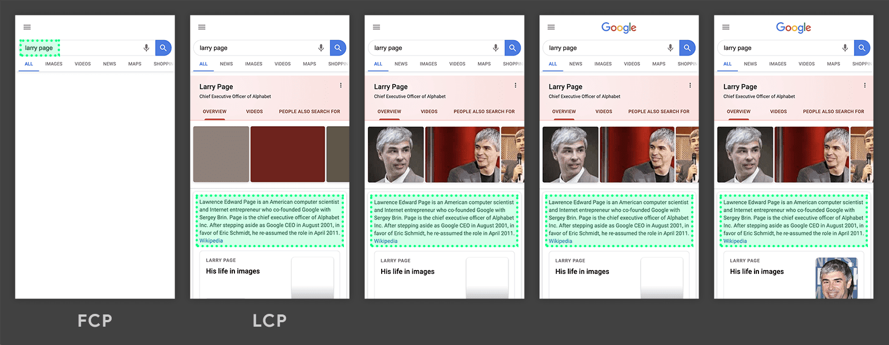
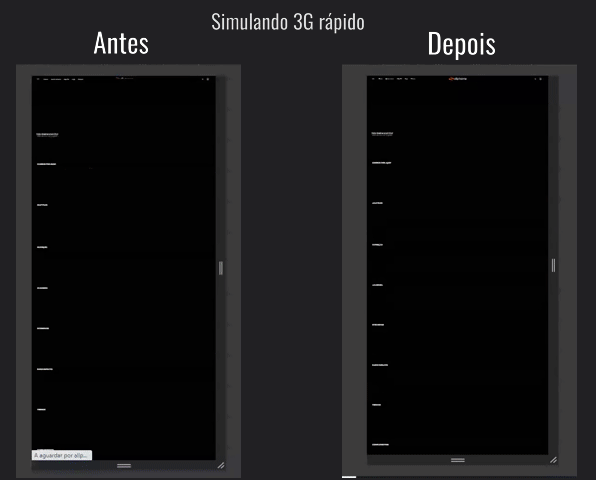
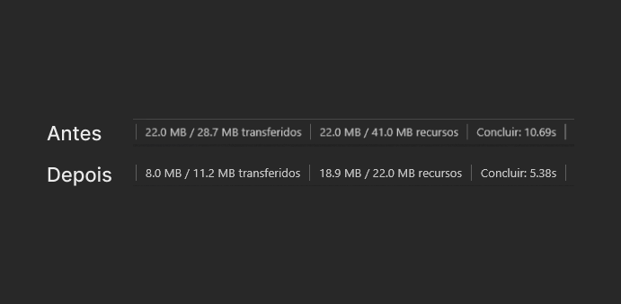

Otimização de LCP na página principal da plataforma
Core Web Vitals · Performance · Imagens
As imagens não otimizadas da página principal forçavam o usuário a baixar 22MB de recursos para ver o conteúdo. Em conexões lentas, isso significava minutos de espera. Com a otimização das imagens, o peso caiu para 8MB e o tempo de carregamento reduziu de 10.69s para 5.38s.
Contexto
O LCP (Largest Contentful Paint) mede quanto tempo leva para o maior elemento visível de uma página carregar completamente. É uma das métricas mais importantes do Core Web Vitals, diretamente ligada à percepção de velocidade do usuário e ao ranqueamento no Google. A página principal da plataforma concentrava imagens pesadas sem nenhuma otimização, resultando em LCP elevado.

A dor
Usuários em conexões mais lentas, como 3G, precisavam aguardar mais de 10 segundos para visualizar o conteúdo principal. O download de 22MB de recursos só para renderizar a página tornava a experiência frustrante e aumentava a taxa de abandono.
O que foi feito
Todas as imagens da página principal foram otimizadas: compressão, formatos modernos e ajuste de dimensões para eliminar dados desnecessários. O objetivo era reduzir o payload sem comprometer a qualidade visual percebida pelo usuário.

Resultados
O peso total de dados transferidos caiu de 22MB para 8MB, redução de 64%. O tempo de carregamento caiu de 10.69s para 5.38s, redução de 50%. Em 3G, o conteúdo que antes levaria minutos passou a carregar em poucos segundos.

Tecnologias
Seu negócio também precisa de resultados?
Vamos conversar